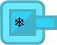
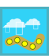
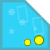
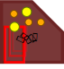

This page contains all the information about special abilities (for turrets).
(from Fire turret)

On impact, burns all enemies and deal massive damage.
(from Snow turret)


On impact, deals damage (?) and stuns all enemies within it's range.
(from Snow turret)

While a snowstorm is happening, all enemies receive double damage.
(from Snow turret)
On impact, applies freezing effect for enemies within it's range (stuns slow enemies such as Strong and all bosses).
(from TNT turret)
They explode after, what, 2 seconds? (I never checked again lol).
The blast radius is small enough for the damage it does.
(from TNT turret)

TNTs spawned on craters deal double damage.
(from Cyclone turret)
Enemies touching the cyclone take constant damage.
On a snowstorm, cyclones move at half their speed but deal double damage and last longer.
That's why they are hard to use.